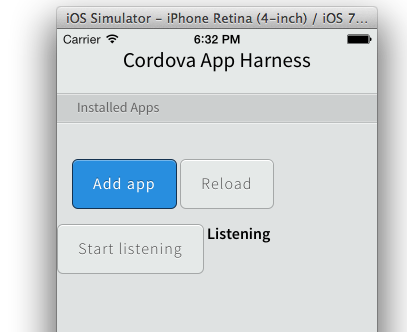

Masahiro Tanaka | Monaca & Onsen UI
Founder & CEO of Monaca, Tokyo Japan
Testing: to find problems.
Debugging: to fix problems.
No swiss army knife, but you can combine them together.
| OS | Console.log | DOM Inspect | JS Debug | Pitfalls | |
|---|---|---|---|---|---|
| W/o tools | iOS, Android | ✔ | |||
| Weinre | iOS, Android | ✔ | ✔ | Limited | No breakpoints |
| Safari Remote Debug |
iOS | ✔ | ✔ | ✔ | iOS >= 6 |
| Chrome Remote Debug |
Android | ✔ | ✔ | ✔ | Android >= 4.4 |
CordovaLog).// Subset of console functions
console.debug("I'm an debug message");
console.info({key: "I'm an info message"}); // [object Object]
console.log("I'm a log message");
console.warn("Warning!", "Secondary message"); // Only first argument
console.error(["It's error!!", "Second error"]); // It's error!!,Second error
// for Android
WebView myWebView = (WebView) findViewById(R.id.webview);
myWebView.setWebChromeClient(new WebChromeClient() {
public boolean onConsoleMessage(ConsoleMessage cm) {
Log.d("Appname", cm.message() + " line=" + cm.lineNumber() + " sourceId=" + cm.sourceId() );
return true;
}
});// for iOS
- (void)webView:(WebView *)webView exceptionWasRaised:(WebScriptCallFrame *)frame
sourceId:(int)sid
line:(int)lineno
forWebFrame:(WebFrame *)webFrame {
if (kExceptionWasRaised)
NSLog(@"sourceId=%d line=%d function=%@ caller=%@ exception=%@",
sid, lineno, [self functionNameForFrame:frame], [self callerForFrame:frame], [self exceptionForFrame:frame]);
}Setup your own server from npm repository.
# npm -g install weinre
$ weinre --httpPort 8888 --boundHost 192.168.xxx.xxxOr use PhoneGap hosted service: debug.phonegap.com
and just follow the instructions!
Requirements: Debug or simulator built app, iOS 6, and Mac Safari
Requirements: Android 4.4 (KitKat), Chrome browser
Enables JavaScript debugging for older Android devices.
Cordova, on-going project.
Will be integrated in PhoneGap SDK.

Part of Monaca development cloud.